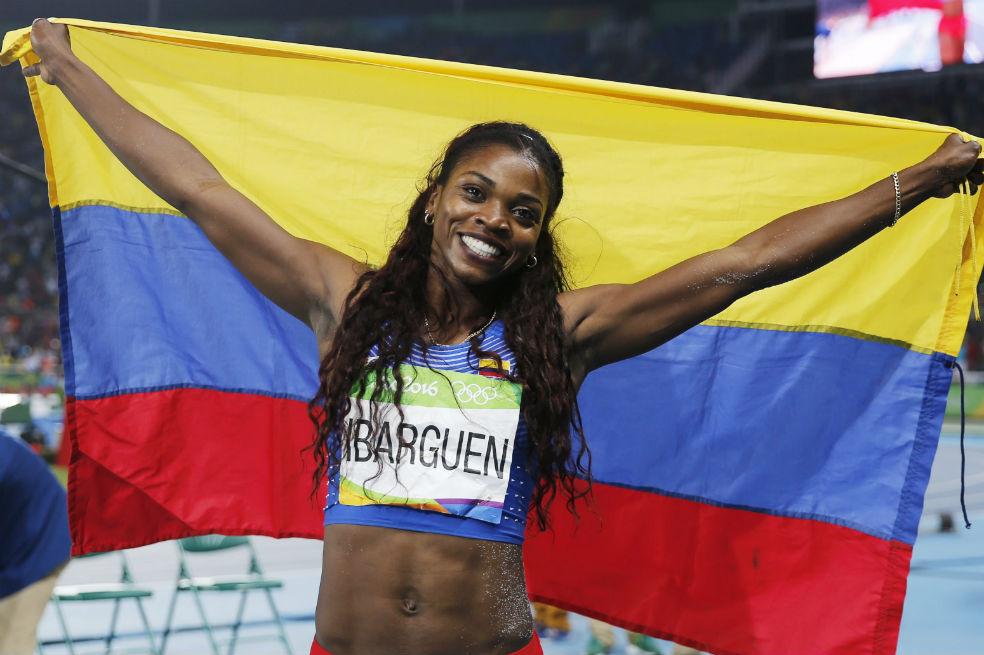
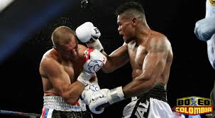

 La historia del atletismo en Colombia se inició en la segunda década del siglo XX, tanto en la modalidad de pista como en la de campo. En pista, se encuentran las pruebas de 100, 200, 400, 800, 1.500, 5.000 y 10.000 metros lisos; las de 100, 110 y 400 con vallas y la de 3.000 metros con obstáculos. La mayoría de las pruebas son individuales, pero también las hay por relevos, como la posta de 4 x 100 y la de 4 x 400 metros. Las pruebas de marcha también se incluyen en esta categoría. A la modalidad de campo pertenecen los saltos de altura, con garrocha, largo y triple, y los lanzamientos de bala, jabalina, martillo y disco. Desde sus comienzos, el atletismo ha sido uno de los deportes más representativos del país y uno de los que cuenta, en la actualidad, con mayor participación de afrocolombianas. Entre ellos sobresalen Silvio Marino Salazar, Gilmar Mayo Lozano, Norfalia Carabalí, Zorbelia Córdoba, Luis Carlos Lucumí, Felipa Palacios y María Isabel Urrutia. En el ámbito internacional, los atletas colombianos han logrado presentaciones aceptables gracias a sus esfuerzos individuales.
 El boxeo amateur en Colombia ha tenido destacadas figuras como Miguel Maturana, campeón de la copa del mundo; tres medallistas olímpicos: Alfonso Pérez, Clemente Rojas y Jorge Eliecer Julio; dos campeones de juegos panamericanos: Likar Ramos y Eleider Álvarez. Al boxeo lo llaman deporte de todos los tiempos, y es el arte de pegar y no recibir con un estilo de combate que reclame el dominio de todas las técnicas unidas a las tácticas para lograr ventaja sobre el rival, por lo que se debe pensar y reaccionar rápidamente, además de ser veloces, precisos y ágiles. Es decir, comprender la perfección de la táctica y dominar la técnica del boxeo.